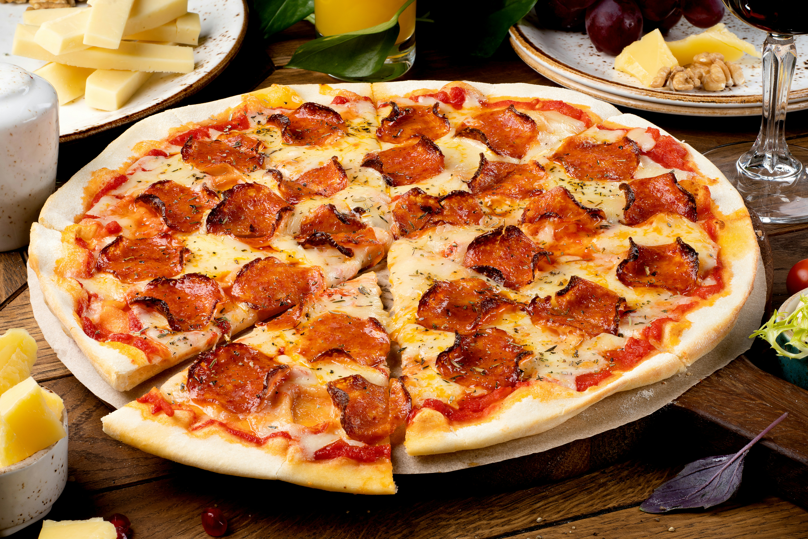

Home
Calabresa Sausage Pizza

Description
Calabresa pizza is a classic and intensely flavorful Brazilian favorite. It features savory, lightly spiced slices of calabresa sausage layered over a melted bed of shredded mozzarella cheese and rich tomato sauce.
Topped with thinly sliced yellow onions, aromatic dried oregano, and dark olives, this pizza offers a satisfying balance of smoky meat, creamy cheese, and crisp crust in every slice.
Ingredients
- 1 ball of pizza dough
- 1/2 cup tomato sauce
- 2 cups shredded mozzarella cheese
- 1 smoked calabresa sausage (thinly sliced)
- 1/2 medium onion (thinly sliced into rings)
- 1 tablespoon olive oil
- 1 teaspoon dried oregano
- Black olives for topping
Steps
- Preheat the oven: Heat your oven to 240°C (475°F).
- Shape the dough: Roll or stretch out the pizza dough on a lightly floured surface into a 30 cm (12-inch) round circle.
- Add the base: Transfer the dough onto a baking tray and spread the tomato sauce evenly, leaving a small border around the edges.
- Layer the cheese: Cover the sauce with an even layer of shredded mozzarella cheese.
- Arrange the toppings: Distribute the sliced calabresa sausage across the cheese, followed by the onion rings and black olives.
- Season: Drizzle a little olive oil over the surface and sprinkle with dried oregano.
- Bake: Bake for 12 to 15 minutes until the crust is golden brown and the cheese is completely melted and bubbly.
- Serve: Remove from the oven, slice into pieces, and serve hot.